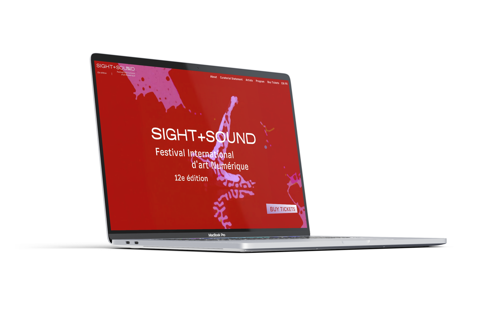
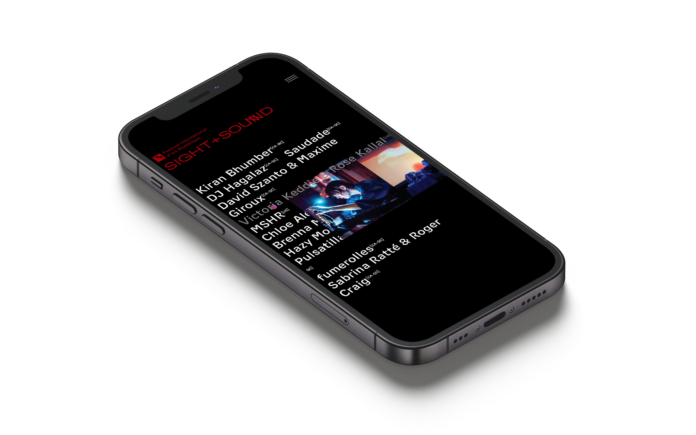
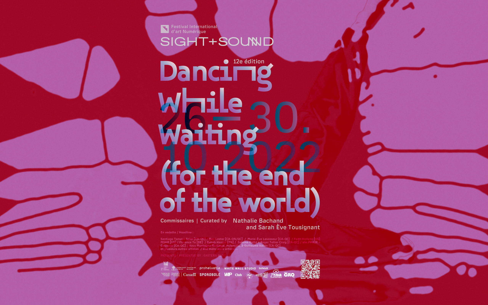

01
SIGHT +
SOUND
Festival International d'art Numérique – 12e Édition
Dancing While Waiting (for the end of the world)
Montréal, 2024
Identidad visual y sistema gráfico para la 12ª edición del Festival Internacional de Arte Digital SIGHT + SOUND, organizado por Eastern Bloc en Montréal.
El núcleo visual nace de una colaboración con la artista de movimiento Yuma Arias. A partir de registros de su cuerpo en danza, se generaron patrones de reaction-diffusion, simulaciones donde el movimiento humano se convierte en textura orgánica, en constante movimiento. La lógica resuena directamente con el nombre de esta edición, Dancing While Waiting (for the end of the world).
El diseño transitó desde la campaña impresa de gran formato hasta la interfaz web, pasando por motion graphics y piezas de merch. Cada salto de formato exigió repensar las mismas reglas bajo condiciones distintas, el sistema, como el cuerpo que lo origina, encontró su forma en el movimiento mismo.




